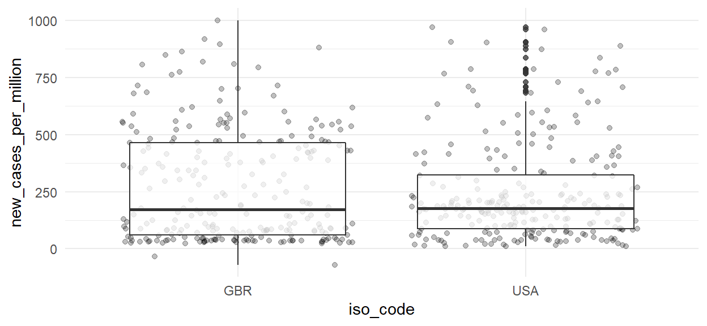
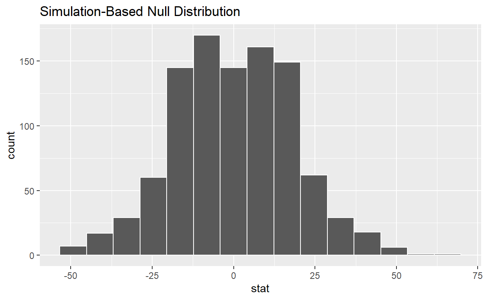
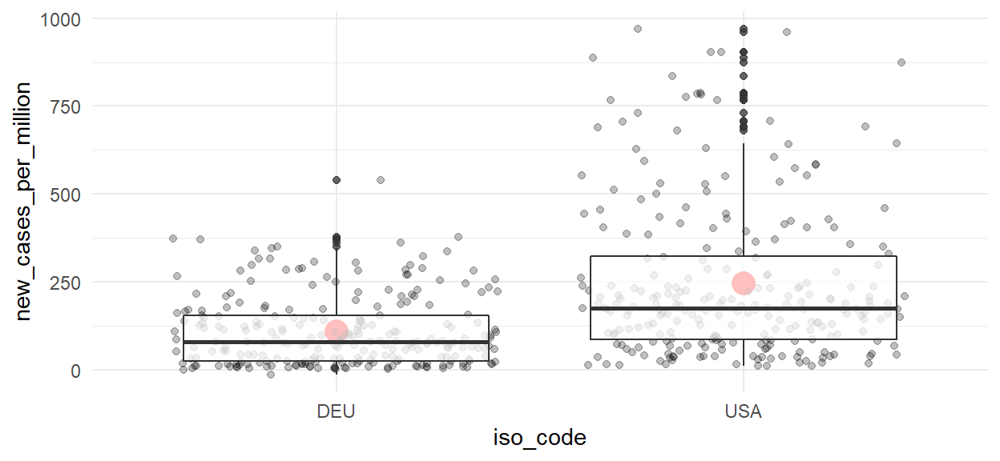
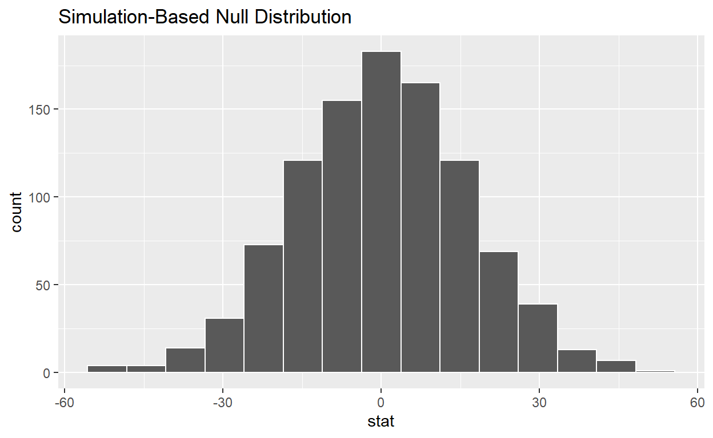
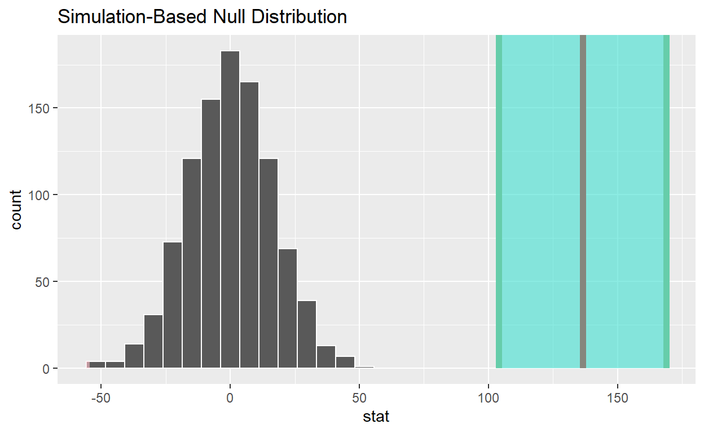

Getting started
First things first: Let’s load infer and the rest of the tidyverse:
Infer is a tidyverse package which aims to aid statistical testing. As such, we also need some data to conduct statistical testing on. As it is 2021, we might as well use something coronavirus-related. This download the vast Our World in Data source file and reads it into R. I will also focus on the UK, since it’s one of the countries with the most cohesive data available.
#download.file("https://github.com/owid/covid-19-data/raw/master/public/data/owid-covid-data.csv", "owid-covid-data.csv")
data <- read_csv("owid-covid-data.csv",
col_types = cols(date = col_date(format = "%Y-%m-%d")))
data <- data %>%
filter(iso_code %in% c("GBR", "USA", "DEU")) %>%
filter(date > "2021-01-01")
glimpse(data)
Rows: 756
Columns: 62
$ iso_code <chr> "DEU", "DEU", "DEU", "…
$ continent <chr> "Europe", "Europe", "E…
$ location <chr> "Germany", "Germany", …
$ date <date> 2021-01-02, 2021-01-0…
$ total_cases <dbl> 1773540, 1783896, 1796…
$ new_cases <dbl> 10903, 10356, 12320, 1…
$ new_cases_smoothed <dbl> 18185.71, 17893.86, 17…
$ total_deaths <dbl> 34480, 34791, 35748, 3…
$ new_deaths <dbl> 335, 311, 957, 1009, 1…
$ new_deaths_smoothed <dbl> 647.714, 642.000, 657.…
$ total_cases_per_million <dbl> 21138.62, 21262.05, 21…
$ new_cases_per_million <dbl> 129.952, 123.432, 146.…
$ new_cases_smoothed_per_million <dbl> 216.753, 213.275, 210.…
$ total_deaths_per_million <dbl> 410.963, 414.670, 426.…
$ new_deaths_per_million <dbl> 3.993, 3.707, 11.406, …
$ new_deaths_smoothed_per_million <dbl> 7.720, 7.652, 7.838, 7…
$ reproduction_rate <dbl> 0.94, 0.96, 0.98, 1.00…
$ icu_patients <dbl> 5703, 5745, 5723, 5650…
$ icu_patients_per_million <dbl> 67.973, 68.474, 68.212…
$ hosp_patients <dbl> NA, NA, NA, NA, NA, NA…
$ hosp_patients_per_million <dbl> NA, NA, NA, NA, NA, NA…
$ weekly_icu_admissions <dbl> NA, NA, NA, NA, NA, NA…
$ weekly_icu_admissions_per_million <dbl> NA, NA, NA, NA, NA, NA…
$ weekly_hosp_admissions <dbl> NA, 7777.015, NA, NA, …
$ weekly_hosp_admissions_per_million <dbl> NA, 92.693, NA, NA, NA…
$ new_tests <dbl> NA, NA, NA, NA, NA, NA…
$ total_tests <dbl> NA, 36016829, NA, NA, …
$ total_tests_per_thousand <dbl> NA, 429.280, NA, NA, N…
$ new_tests_per_thousand <dbl> NA, NA, NA, NA, NA, NA…
$ new_tests_smoothed <dbl> 125811, 120818, 128689…
$ new_tests_smoothed_per_thousand <dbl> 1.500, 1.440, 1.534, 1…
$ positive_rate <dbl> NA, 0.154, NA, NA, NA,…
$ tests_per_case <dbl> NA, 6.5, NA, NA, NA, N…
$ tests_units <chr> "tests performed", "te…
$ total_vaccinations <dbl> 280781, 303333, 349385…
$ people_vaccinated <dbl> 279853, 302401, 348402…
$ people_fully_vaccinated <dbl> 928, 932, 983, 1070, 1…
$ total_boosters <dbl> NA, NA, NA, NA, NA, NA…
$ new_vaccinations <dbl> 48088, 22552, 46052, 5…
$ new_vaccinations_smoothed <dbl> 42738, 39854, 43848, 4…
$ total_vaccinations_per_hundred <dbl> 0.33, 0.36, 0.42, 0.48…
$ people_vaccinated_per_hundred <dbl> 0.33, 0.36, 0.42, 0.48…
$ people_fully_vaccinated_per_hundred <dbl> 0.00, 0.00, 0.00, 0.00…
$ total_boosters_per_hundred <dbl> NA, NA, NA, NA, NA, NA…
$ new_vaccinations_smoothed_per_million <dbl> 509, 475, 523, 526, 52…
$ stringency_index <dbl> 82.41, 82.41, 82.41, 8…
$ population <dbl> 83900471, 83900471, 83…
$ population_density <dbl> 237.016, 237.016, 237.…
$ median_age <dbl> 46.6, 46.6, 46.6, 46.6…
$ aged_65_older <dbl> 21.453, 21.453, 21.453…
$ aged_70_older <dbl> 15.957, 15.957, 15.957…
$ gdp_per_capita <dbl> 45229.25, 45229.25, 45…
$ extreme_poverty <dbl> NA, NA, NA, NA, NA, NA…
$ cardiovasc_death_rate <dbl> 156.139, 156.139, 156.…
$ diabetes_prevalence <dbl> 8.31, 8.31, 8.31, 8.31…
$ female_smokers <dbl> 28.2, 28.2, 28.2, 28.2…
$ male_smokers <dbl> 33.1, 33.1, 33.1, 33.1…
$ handwashing_facilities <dbl> NA, NA, NA, NA, NA, NA…
$ hospital_beds_per_thousand <dbl> 8, 8, 8, 8, 8, 8, 8, 8…
$ life_expectancy <dbl> 81.33, 81.33, 81.33, 8…
$ human_development_index <dbl> 0.947, 0.947, 0.947, 0…
$ excess_mortality <dbl> NA, 38.85, NA, NA, NA,…Starting off with infer
The idea of infer is to simplfy statistical testing into four easy steps:
specify()hypothesize()generate()calculate()
We now go through each of these steps one by one.
specify: What do we want to know?
First of all, we have to clarify what issue we want to test. What variable of our data frame are we interested in? In this blog post we will ask ourselves, whether there was a significant difference between the reported incidence of SARS-Cov-2 cases between Great Britain and the USA. Has one country had on average less new cases (per million) than the other?`
So we filter the data to compare Great Britain and the USA. Then we specify what variables we are interested in. We also declare, what we believe is cause and effect, e. g. the different countries should explain (explanatory), why there is a difference in new cases (response).
data %>%
filter(iso_code %in% c("GBR", "USA")) %>%
specify(explanatory = iso_code, response = new_cases_per_million )
Response: new_cases_per_million (numeric)
Explanatory: iso_code (factor)
# A tibble: 504 × 2
new_cases_per_million iso_code
<dbl> <fct>
1 848. GBR
2 809. GBR
3 864. GBR
4 896. GBR
5 917. GBR
6 774. GBR
7 1000. GBR
8 881. GBR
9 807. GBR
10 678. GBR
# … with 494 more rowshypothesize: declaring the null hypothesis
Secondly, we declare the null hypothesis. Statistically speaking, the null hypothesis assumes there truly is no difference (or no correlation). Applied to our example our null hypothesis would be: There is no significant difference in new SARS-Cov2 cases per million people between the US and the UK.
On a side note: We also introduce a new, shorter way of using specify. Keep an eye on which order you place the arguments (i. e. column names) in, because that determines which is used as the dependent or independent variable.
Do not pay a lot of attention on the output our code is generating at this moment. Hopefully, this all comes together shortly. As long as there aren’t any errors and you roughly understand the statistical lingo, we should be fine.
data %>%
filter(iso_code %in% c("GBR", "USA")) %>%
specify(new_cases_per_million ~ iso_code) %>%
hypothesize(null = "independence")
Response: new_cases_per_million (numeric)
Explanatory: iso_code (factor)
Null Hypothesis: independence
# A tibble: 504 × 2
new_cases_per_million iso_code
<dbl> <fct>
1 848. GBR
2 809. GBR
3 864. GBR
4 896. GBR
5 917. GBR
6 774. GBR
7 1000. GBR
8 881. GBR
9 807. GBR
10 678. GBR
# … with 494 more rowsgenerate: generating the null distribution
Not quite sure what happens here.
data %>%
filter(iso_code %in% c("GBR", "USA")) %>%
specify(iso_code ~ new_cases_per_million) %>%
hypothesize(null = "independence") %>%
generate(reps = 1000, type = "permute")
Response: iso_code (factor)
Explanatory: new_cases_per_million (numeric)
Null Hypothesis: independence
# A tibble: 504,000 × 3
# Groups: replicate [1,000]
iso_code new_cases_per_million replicate
<fct> <dbl> <int>
1 USA 848. 1
2 GBR 809. 1
3 USA 864. 1
4 USA 896. 1
5 GBR 917. 1
6 GBR 774. 1
7 GBR 1000. 1
8 GBR 881. 1
9 USA 807. 1
10 USA 678. 1
# … with 503,990 more rowscalculate: calculating summary statistics
Now that we have some understanding of how to use the infer functions, we try to get back to our original question.
Short interlude: Visualization
Before we move on with facts, figures and infer, let’s try to get a rough picture of our question with some basic data visualization.
data %>%
filter(iso_code %in% c("GBR", "USA")) %>%
ggplot(aes(x = iso_code, y = new_cases_per_million)) +
geom_jitter(alpha = 0.25) +
geom_boxplot(alpha = 0.75) +
theme_minimal()

Here we already see that both medians lie quite close together. So, aren’t these countries so different after all?
Back to infer: t-Test
So, let’s calculate how big the difference between both medians actually is:
observed_diff_in_medians <- data %>%
filter(iso_code %in% c("GBR", "USA")) %>%
specify(new_cases_per_million ~ iso_code) %>%
calculate(stat = "diff in medians", order = c("USA", "GBR"))
observed_diff_in_medians
Response: new_cases_per_million (numeric)
Explanatory: iso_code (factor)
# A tibble: 1 × 1
stat
<dbl>
1 3.58So, stat = diff in medians does what it says: It calculates the difference in medians. The order specifies the order of the subtraction (i. e. changes the sign.)
Just for illustration purposes, we can also try to calculate the difference in medians without infer:
data %>%
filter(iso_code %in% c("GBR", "USA")) %>%
group_by(iso_code) %>%
summarise(
median = median(new_cases_per_million),
) %>%
summarise(
iso_code = iso_code,
median = median,
diff = diff(median),
)
# A tibble: 2 × 3
iso_code median diff
<chr> <dbl> <dbl>
1 GBR 173. 3.58
2 USA 177. 3.58But back to infer: We know now the difference between medians of new_cases_per_million in both countries equals 3.576. Is this enough do discard our null hypothesis?
Let’s use infer to generate some data under the assumption, that in fact, the null hypothesis is true and there genuinely is no significant difference in new cases between both countries. Then we calculate the diff in medians for each replicate of the generated data.
null_dist_sample <- data %>%
filter(iso_code %in% c("GBR", "USA")) %>%
specify(new_cases_per_million ~ iso_code) %>%
hypothesise(null = "independence") %>%
generate(rep = 1000, type = "permute")
null_dist_sample
Response: new_cases_per_million (numeric)
Explanatory: iso_code (factor)
Null Hypothesis: independence
# A tibble: 504,000 × 3
# Groups: replicate [1,000]
new_cases_per_million iso_code replicate
<dbl> <fct> <int>
1 60.3 GBR 1
2 485. GBR 1
3 129. GBR 1
4 477. GBR 1
5 529. GBR 1
6 678. GBR 1
7 550. GBR 1
8 522. GBR 1
9 79.3 GBR 1
10 422. GBR 1
# … with 503,990 more rowsnull_dist_sample <- null_dist_sample %>%
calculate(stat = "diff in medians", order = c("GBR", "USA"))
null_dist_sample
Response: new_cases_per_million (numeric)
Explanatory: iso_code (factor)
Null Hypothesis: independence
# A tibble: 1,000 × 2
replicate stat
<int> <dbl>
1 1 -16.0
2 2 -5.78
3 3 -12.6
4 4 3.32
5 5 -7.91
6 6 15.6
7 7 -12.5
8 8 -3.04
9 9 17.0
10 10 -0.00800
# … with 990 more rowsNow we can visualize our generated data. Think of it this way: Through some mathematical tricks, infer tried to simulate what our data would look like in a population where the null hypothesis were true.
null_dist_sample %>%
visualise()

We see a histogram which represents the data of the 1000 reps we generated above. We see that the majority of reps calculated a diff in medians somewhere around zero. This makes sense, since this data is ought to be generated in a population where there is no true difference between new cases (null hypothesis) and all difference there is should be due to random chance.
Now, let’s see where in that diagram our acutal, observed difference in medians (3.576) would fall:
null_dist_sample %>%
visualise() +
shade_p_value(observed_diff_in_medians,
direction = "two-sided")

Response: new_cases_per_million (numeric)
Explanatory: iso_code (factor)
# A tibble: 1 × 1
stat
<dbl>
1 1.22
# A tibble: 1 × 1
p_value
<dbl>
1 0.854# A tibble: 1 × 7
statistic t_df p_value alternative estimate lower_ci upper_ci
<dbl> <dbl> <dbl> <chr> <dbl> <dbl> <dbl>
1 1.22 498. 0.222 two.sided 25.0 -15.2 65.3Another one…
To further strengthen our infer and statistical knowledge, let’s look at another country. Maybe Germany had significantly lower cases on average than the USA?
Charts.
data %>%
filter(iso_code %in% c("DEU", "USA")) %>%
ggplot(aes(x = iso_code, y = new_cases_per_million)) +
stat_summary(fun=mean, geom="point", size=5, color="red", fill="red") +
geom_jitter(alpha = 0.25) +
geom_boxplot(alpha = 0.75) +
theme_minimal()

On the first glance, it’s still a close race, however, there seems to be more of a difference in medians.
We further added a red dot to each box which represents the mean value of new_cases_per_million (notice the difference between mean and median). The means seem to be apart even further.
Infer
Let’s take more in-depth look with infer. Again, we start off by calculating the difference in means which we observed in our data.
Then we let infer generate data under the assumption that the reported new cases per million are independent of the country they occurred in (null hypothesis). When using type = permute, infer does this by reassigning the values new_cases_per_million by chance to either one of the countries. For each rep, our entire data get’s shuffled once. Thus, a possible link between both variables get’s broken.
Subsequently, we also calculate the difference in means in the generated data. Because we assumed the null hypothesis to be true, this calculation should result in a normal distribution around 0.
# Calculate difference in means in observed data
observed_mean_diff_usa_deu <- data %>%
filter(iso_code %in% c("USA", "DEU")) %>%
specify(new_cases_per_million ~ iso_code) %>%
calculate("diff in means", order = c("USA", "DEU"))
observed_mean_diff_usa_deu
Response: new_cases_per_million (numeric)
Explanatory: iso_code (factor)
# A tibble: 1 × 1
stat
<dbl>
1 136.# generate a null distribution based on null hypothesis (independence)
# then calculate the differences in means in that generated "population"
null_dist_usa_deu <- data %>%
filter(iso_code %in% c("USA", "DEU")) %>%
specify(new_cases_per_million ~ iso_code) %>%
hypothesise(null = "independence") %>%
generate(reps = 1000, type = "permute") %>%
calculate("diff in means", order = c("USA", "DEU"))
null_dist_usa_deu %>%
visualise()

We see that the difference in means we observed equals 136.45.
But we might ask ourselves: How sure can we be of this point estimate? Luckily, infer allows us to calculate confidence intervals:
ci_diff_usa_deu <- null_dist_usa_deu %>%
get_confidence_interval(point_estimate = observed_mean_diff_usa_deu,
type = "se", # standard error
level = .95)
# Visualize the diff in means in generated null distribution
# and the *observed* diff in means
null_dist_usa_deu %>%
visualise() +
shade_p_value(observed_mean_diff_usa_deu,
direction = "two-sided") +
shade_confidence_interval(ci_diff_usa_deu)

Already we can see that our observed difference in means if much, much higher than anything we calculated in our data which assumed the null hypothesis.
Thus, the possibility of actually observing a difference in means this large (or larger) in a population where the null hypothesis is true, is very small.
If we wanted to put an exact number on that possibility we could calculate the p-value.
p_value_mean_usa_deu <- null_dist_usa_deu %>%
get_p_value(obs_stat = observed_mean_diff_usa_deu,
direction = "two-sided")
p_value_mean_usa_deu
# A tibble: 1 × 1
p_value
<dbl>
1 0So, in a world where the number of new covid cases was independent of the country they appeared in, the possibility of observing a difference in means of cases by country of 136.4525119 (or more) would be 0.
# A tibble: 1 × 7
statistic t_df p_value alternative estimate lower_ci upper_ci
<dbl> <dbl> <dbl> <chr> <dbl> <dbl> <dbl>
1 9.01 350. 1.38e-17 two.sided 136. 107. 166.